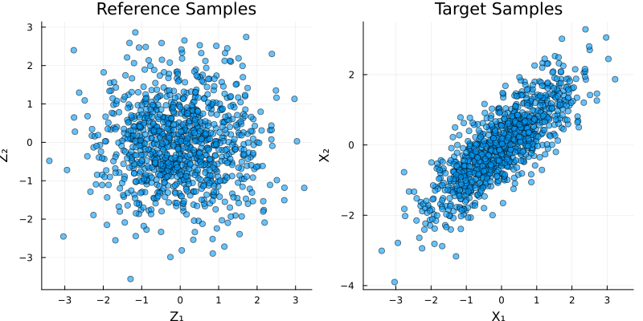
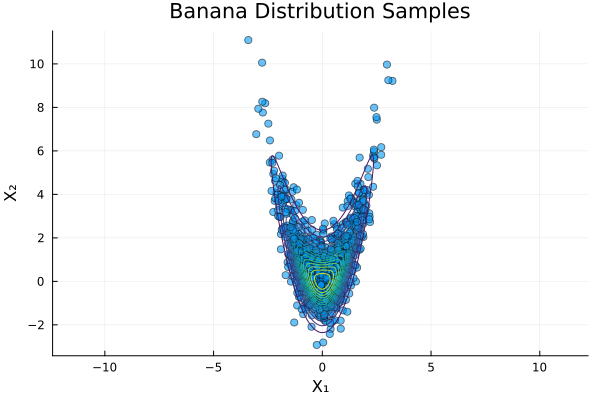

Getting Started with TransportMaps.jl
This guide will help you get started with TransportMaps.jl for constructing and using transport maps.
Basic Concepts
What is a Transport Map?
A transport map T is a function that transforms samples from a reference distribution (typically standard Gaussian) to a target distribution [1]. The key property is that if X ~ ρ₀ (reference) and Y = T(X), then Y ~ ρ₁ (target).
Triangular Maps
TransportMaps.jl focuses on triangular transport maps [3], where:
- T₁(x) = T₁(x₁)
- T₂(x) = T₂(x₁, x₂)
- T₃(x) = T₃(x₁, x₂, x₃)
- ...
This structure ensures that the map is invertible and the Jacobian determinant is easy to compute. The construction follows the Knothe-Rosenblatt rearrangement [7].# ## Installation and Setup
using TransportMaps
using Distributions
using Random
using Plots
using LinearAlgebraYour First Transport Map
Let's create a simple 2D transport map:
Set random seed for reproducibility
Random.seed!(1234)Random.TaskLocalRNG()Create a 2D polynomial map with degree 2
M = PolynomialMap(2, 2, Softplus())PolynomialMap:
Dimensions: 2
Total coefficients: 9
Maximum degree: 2
Basis: Hermite
Rectifier: Softplus
Components:
Component 1: 3 basis functions
Component 2: 6 basis functions
Coefficients: min=1.0e-323, max=6.9379170709171e-310, mean=6.1670178427655e-310
The map is initially identity (coefficients are zero)
println("Initial coefficients: ", getcoefficients(M))Initial coefficients: [6.93788824969687e-310, 1.0e-323, 6.93784228031616e-310, 6.937891063662e-310, 6.93789106365487e-310, 6.93790688047365e-310, 6.9379170709171e-310, 6.9379069057437e-310, 6.937917070425e-310]Defining a Target Distribution
For optimization, you need to define your target probability density. Let's start with a simple correlated Gaussian:
Example: Correlated Gaussian
function correlated_gaussian(x; ρ=0.8)
Σ = [1.0 ρ; ρ 1.0]
return pdf(MvNormal(zeros(2), Σ), x)
endcorrelated_gaussian (generic function with 1 method)Create a TargetDensity object for optimization
target_density = TargetDensity(correlated_gaussian, :auto_diff)TargetDensity(gradient_type=:auto_diff)Setting up Quadrature
Choose an appropriate quadrature scheme for map optimization:
Gauss-Hermite quadrature (good for Gaussian-like targets)
quadrature = GaussHermiteWeights(5, 2) # 5 points per dimension, 2DGaussHermiteWeights:
Number of points: 25
Dimensions: 2
Quadrature type: Tensor product Gauss-Hermite
Reference measure: Standard Gaussian
Weight range: [0.00012672930980149358, 0.28444444444444505]
Weight sum: 1.0000000000000002
Points (first 5):
[-2.8569700138728056, -2.8569700138728056] → weight: 0.00012672930980149358
[-1.3556261799742675, -2.8569700138728056] → weight: 0.0024999999999999927
[-1.2560739669470201e-15, -2.8569700138728056] → weight: 0.0060039527081176955
[1.3556261799742675, -2.8569700138728056] → weight: 0.0024999999999999927
[2.8569700138728056, -2.8569700138728056] → weight: 0.00012672930980149358
... and 20 more
Alternative options (commented out): quadrature = MonteCarloWeights(1000, 2) # 1000 samples, 2D quadrature = LatinHypercubeWeights(1000, 2)
Optimizing the Map
Fit the transport map to your target distribution:
println("Optimizing the map...")
@time result = optimize!(M, target_density, quadrature)
println("Optimization result: ", result)
println("Final coefficients: ", getcoefficients(M))Optimizing the map...
0.982322 seconds (3.44 M allocations: 187.660 MiB, 2.18% gc time, 88.67% compilation time)
Optimization result: * Status: success
* Candidate solution
Final objective value: 2.837877e+00
* Found with
Algorithm: L-BFGS
* Convergence measures
|x - x'| = 3.50e-08 ≰ 0.0e+00
|x - x'|/|x'| = 4.37e-08 ≰ 0.0e+00
|f(x) - f(x')| = 2.22e-15 ≰ 0.0e+00
|f(x) - f(x')|/|f(x')| = 7.82e-16 ≰ 0.0e+00
|g(x)| = 6.45e-11 ≤ 1.0e-08
* Work counters
Seconds run: 0 (vs limit Inf)
Iterations: 7
f(x) calls: 19
∇f(x) calls: 19
Final coefficients: [2.944013880231288e-12, 0.5413248546146763, -7.222147401065582e-12, -2.8435575707418865e-12, 0.8000000000013396, -0.19587036834756433, 7.950291974275175e-12, -6.317184866841605e-17, 2.548287156231699e-12]Generating Samples
Once optimized, use the map to generate samples:
Generate reference samples (standard Gaussian)
n_samples = 1000
reference_samples = randn(n_samples, 2)1000×2 Matrix{Float64}:
0.970656 -0.563375
-0.979218 -0.321198
0.901861 -1.08085
-0.0328031 0.1828
-0.600792 -1.10277
-1.44518 0.0973357
2.70742 -1.50738
1.52445 0.495961
0.759804 1.65377
-0.881437 -0.902006
⋮
0.736417 0.898635
0.191944 0.0989677
0.764671 -0.723075
0.460548 0.805013
-1.45535 -0.952593
-0.73168 0.66637
-0.463285 -0.0398125
0.511219 0.288282
-1.29112 -3.55823Transform to target distribution
target_samples = zeros(n_samples, 2)
for i in 1:n_samples
target_samples[i, :] = evaluate(M, reference_samples[i, :])
endVisualizing Results
Let's plot both the reference and target samples:
p1 = scatter(reference_samples[:, 1], reference_samples[:, 2],
alpha=0.6, title="Reference Samples",
xlabel="Z₁", ylabel="Z₂", legend=false, aspect_ratio=:equal)
p2 = scatter(target_samples[:, 1], target_samples[:, 2],
alpha=0.6, title="Target Samples",
xlabel="X₁", ylabel="X₂", legend=false, aspect_ratio=:equal)
plot(p1, p2, layout=(1,2), size=(800, 400))
Evaluating Map Quality
Check how well your map approximates the target:
Variance diagnostic (should be close to 1 for good maps)
var_diag = variance_diagnostic(M, target_density, reference_samples)
println("Variance diagnostic: ", var_diag)Variance diagnostic: 6.283022019963596e-22You can also check the Jacobian determinant
sample_point = [0.0, 0.0]
jac = jacobian(M, sample_point)
det_jac = det(jac)
println("Jacobian determinant at origin: ", det_jac)Jacobian determinant at origin: 0.6000000000001051Working with Different Rectifiers
The rectifier function affects the map's behavior. Let's compare different options:
Identity rectifier (linear map)
M_linear = PolynomialMap(2, 2, IdentityRectifier())
result_linear = optimize!(M_linear, target_density, quadrature)
var_diag_linear = variance_diagnostic(M_linear, target_density, reference_samples)NaNShiftedELU rectifier
M_elu = PolynomialMap(2, 2, ShiftedELU())
result_elu = optimize!(M_elu, target_density, quadrature)
var_diag_elu = variance_diagnostic(M_elu, target_density, reference_samples)
println("Variance diagnostics:")
println(" Softplus: ", var_diag)
println(" Identity: ", var_diag_linear)
println(" ShiftedELU: ", var_diag_elu)Variance diagnostics:
Softplus: 6.283022019963596e-22
Identity: NaN
ShiftedELU: 7.355041514833281e-24More Complex Example: Banana Distribution
Now let's try a more challenging target - the banana distribution:
Define banana density
banana_density(x) = pdf(Normal(), x[1]) * pdf(Normal(), x[2] - x[1]^2)
target_density_banana = TargetDensity(banana_density, :auto_diff)TargetDensity(gradient_type=:auto_diff)Create a new map for this target
M_banana = PolynomialMap(2, 2, Softplus())
result_banana = optimize!(M_banana, target_density_banana, quadrature) * Status: success
* Candidate solution
Final objective value: 2.837877e+00
* Found with
Algorithm: L-BFGS
* Convergence measures
|x - x'| = 1.22e-07 ≰ 0.0e+00
|x - x'|/|x'| = 1.22e-07 ≰ 0.0e+00
|f(x) - f(x')| = 1.53e-13 ≰ 0.0e+00
|f(x) - f(x')|/|f(x')| = 5.38e-14 ≰ 0.0e+00
|g(x)| = 2.18e-09 ≤ 1.0e-08
* Work counters
Seconds run: 0 (vs limit Inf)
Iterations: 13
f(x) calls: 34
∇f(x) calls: 34
Display optimized map
display(M_banana)Generate samples
banana_samples = zeros(n_samples, 2)
for i in 1:n_samples
banana_samples[i, :] = evaluate(M_banana, reference_samples[i, :])
endVisualize the banana distribution
x1_grid = range(-3, 3, length=100)
x2_grid = range(-3, 6, length=100)
posterior_values = [banana_density([x₁, x₂]) for x₂ in x2_grid, x₁ in x1_grid]
scatter(banana_samples[:, 1], banana_samples[:, 2],
alpha=0.6, title="Banana Distribution Samples",
xlabel="X₁", ylabel="X₂", legend=false, aspect_ratio=:equal)
contour!(x1_grid, x2_grid, posterior_values, colormap=:viridis, label="Posterior Density")
Check quality
var_diag_banana = variance_diagnostic(M_banana, target_density_banana, reference_samples)
println("Banana distribution variance diagnostic: ", var_diag_banana)Banana distribution variance diagnostic: 1.268748096427236e-18Tips for Success
- Start Simple: Begin with low-degree polynomials (degree 1-3)
- Choose Appropriate Quadrature: Gauss-Hermite works well for Gaussian-like targets
- Monitor Diagnostics: Variance diagnostic should be close to 1
- Experiment with Rectifiers: Different rectifiers work better for different problems
- Scale Your Problem: Normalize your target distribution if needed
For theoretical guidance on transport map construction, see [1] and [2]. Advanced techniques for monotone triangular maps are discussed in [3].
Next Steps
- Explore more complex distributions
- Try higher-dimensional problems (see [3] for scalability considerations)
- Experiment with adaptive map construction
- Check out the banana distribution example for more details